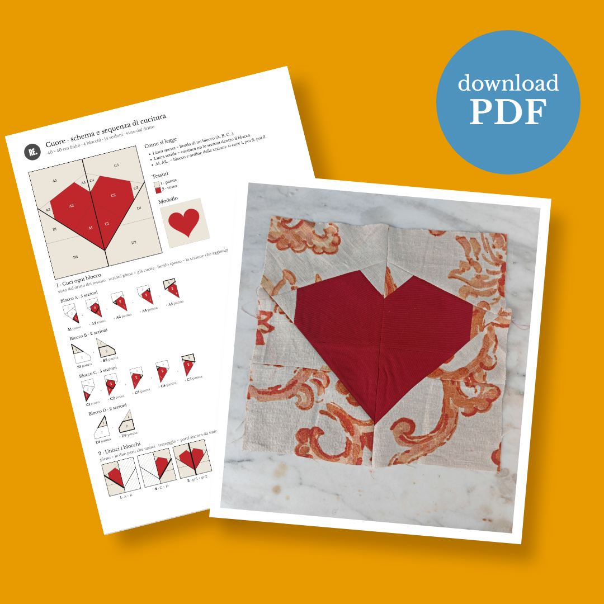
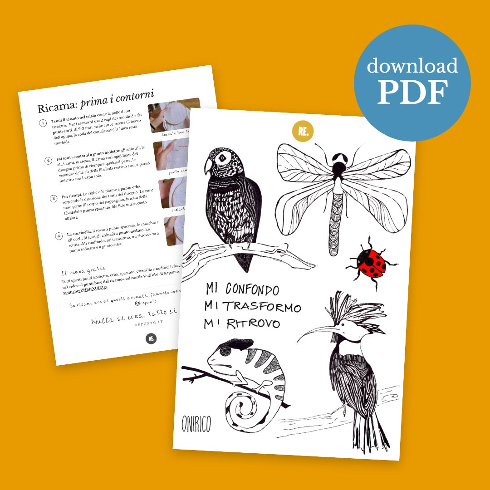
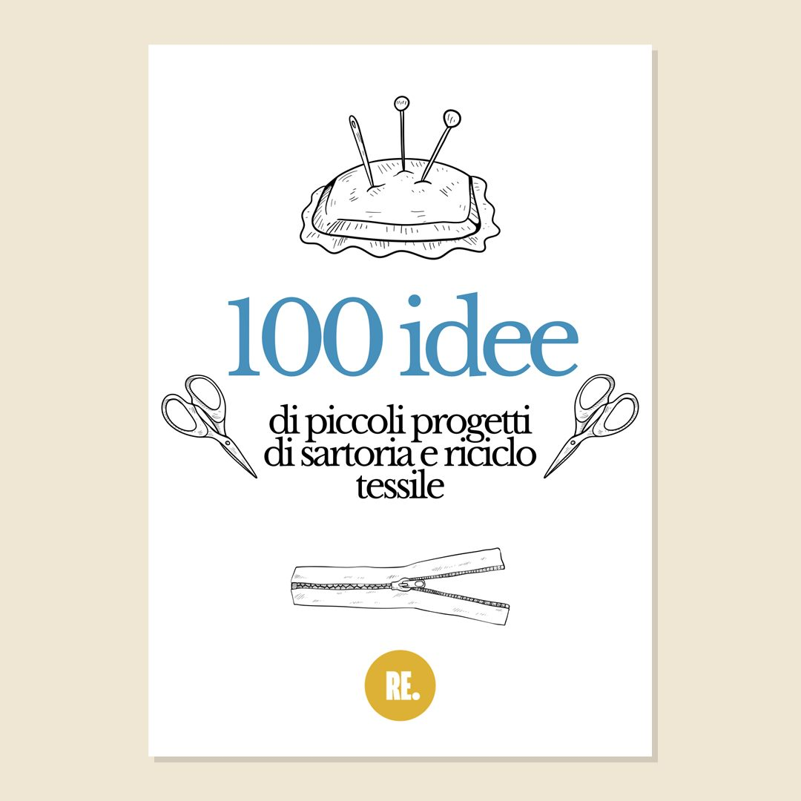

NovembreCuore in patchwork su carta
Un cuore di 40 × 40 cm fatto di ritagli e di sole cuciture dritte, con le 14 sagome a grandezza vera in 7 fogli.
6 €
Ogni mese preparo un progetto di riciclo: il video è gratis su YouTube, la scheda PDF ha le foto di ogni passaggio e il cartamodello già pronto da stampare. La scarichi subito dopo il pagamento.

NovembreUn cuore di 40 × 40 cm fatto di ritagli e di sole cuciture dritte, con le 14 sagome a grandezza vera in 7 fogli.

Al posto della stagnola e della pellicola, un cerchio di cotone e un elastico. Cartamodello in quattro misure.

Fiori, animali, mare, Natale, alfabeto e numeri: disegni semplici da ricalcare sul tessuto. Otto pagine.

Livello 2Upupa, pappagallo, camaleonte, libellula e coccinella, pieni di dettagli: per chi ha già provato i punti base.

GratisCento piccoli progetti per dare una seconda vita a vestiti e tessuti, da tenere a portata di mano. Sei pagine.
Dopo il pagamento si apre una pagina con il pulsante per scaricare il PDF, e ti arriva un'email con lo stesso link. Il link vale 30 giorni: salva il file appena lo scarichi.
Nella pagina di pagamento premi «Aggiungi codice promozionale» e scrivi il codice del mese che trovi nella lettera. Lo sconto vale per la scheda del mese, nel mese in cui esce.
Ogni scheda dice per chi è adatta, con le foto di ogni passaggio. Molte si fanno a mano, con ago e filo, e per ogni progetto c'è il video gratis su YouTube.
Sulla pagina sicura di Stripe, con carta di credito o di debito, Apple Pay o Satispay. I dati della carta non arrivano a me. Tutto è spiegato nelle condizioni di vendita.
Sì. Il link che hai ricevuto da Payhip continua a valere; se non lo trovi più, scrivimi a repunto.studio@gmail.com e ti mando il file.